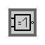

Logik-Gatter-Erweiterungskarte
Logik-Gatter-Erweiterungskarte
| Kategorie: | Logik-Gatter |
|---|---|
| Transparenz | Nein |
| Lichtstärke | 0 |
| Entflammbarkeit | Nein |
| ExplosionsResistenz | Nein |
| Abbauwerkzeug | nicht platzierbar |
| Stapelbar | 16 |
| Drop | |
| Veröffentlichung | 1.14.4 |
Auf Logik-Gatter-Erweiterungskarten werden Daten gespeichert, die vom Logik-Gatter-Hub ausgelesen werden.
In der Workbench können Erweiterungskarten mit Pins, Kabeln, Speicherkarten und Widerständen zu den Logik-Gatter-Erweiterungskarten erweitert werden.
Inhaltsverzeichnis
Herstellung
Zur Herstellung öffnet der Spieler mit Rechts-Klick die Workbench. Dort kann ausgewählt werden, welche Gatter Logik auf der Erweiterungskarte gespeichert werden. In der GUI der Workbench wird angezeigt, welche Materialien eingelegt werden müssen. Nach dem einlgen kann der Spieler die Logik-Gatter-Erweiterungskarte herausnehmen. Im folgenden werden alle Kosten aufgelistet:
| Logik-Gatter-Erweiterungskarte | Logik | Rezept | Logik-Gatter-Block |
|---|---|---|---|
 |
UND-Gatter |  |
|
| ODER-Gatter |  |
||
 |
ENTWEDER-ODER-Gatter | ||
 |
NICHT-Gatter | ||
 |
NICHT-UND-Gatter | ||
| NICHT-ODER-Gatter | |||
|  | NICHT-ENTWEDER-ODER-Gatter |
Verwendung
Der Spieler kann durch einen Rechts-Klick auf den Logik-Gatter-Hub das GUI öffnen. Dort kann auf der rechten Seite eine Logik-Gatter-Erweiterungskarte eingelegt werden. Je nach Einlage ändert sich die Rechnerlogik im Block und die Textur des PC auf dem Block. Eine Übersicht über die Formeln der Logik gibt es hier.
Galerie
Geschichte
| Versionsgeschichte der Java-Edition | ||||||||||
|---|---|---|---|---|---|---|---|---|---|---|
|
Diese Seite wurde zuletzt am 13.Mai.2020 um 01.42Uhr bearbeitet.